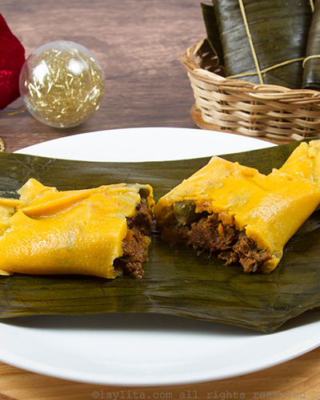

My Favorite Food
Hallacas
Hallacas are traditional Venezuelan Christmas Eve gifts that are lovingly prepared for the recipients. The filling usually starts with whole chicken, pork shoulder, bacon, and beef chuck all separately seasoned, stewed, and shredded or chopped. This lightened version uses leaner cuts of meat, skips the bacon, and stews all the meats together.

Ingredients
1/4 cup plus 2 tablespoons olive oil, divided
1 (8-ounce) skinless, boneless chicken breast half, chopped
6 ounces beef sirloin, chopped
6 ounces pork tenderloin, finely chopped
1 1/2 cups finely chopped leek
1 cup finely chopped onion
1/3 cup chopped green onions
2 garlic cloves, minced
1 2/3 cups chopped green or red bell pepper
1/2 cup chopped seeded Cubanelle or Anaheim chile
3/4 cup chopped seeded tomato
2 1/2 cups fat-free, lower-sodium chicken broth, divided
1/3 cup red wine vinegar
2 tablespoons brown sugar
1 teaspoon smoked paprika
1/2 teaspoon salt
1/2 teaspoon ground red pepper
1/4 teaspoon black pepper
1/2 cup sliced shallots
1/2 cup sliced roasted red bell pepper
1/2 cup raisins
1/3 cup sliced pimiento-stuffed olives
1/2 cup finely chopped sweet pickles
1/2 cup small capers
1/2 cup sliced almonds
1/4 cup chopped fresh cilantro
1 tablespoon annatto (achiote) seeds
1 1/3 cups butternut squash puree (canned or fresh)
3 cups precooked white corn flour (such as P.A.N.)
1/2 teaspoon salt 16 (12-inch) squares foil
3 hard-cooked large eggs, thinly sliced lengthwise Reduced-fat sour cream, fresh cilantro leaves (optional)
Directions
- Heat a large nonstick skillet over medium-high heat. Add 1 tablespoon oil to pan; swirl to coat. Add chicken; cook 5 minutes or until done, stirring occasionally. Remove from skillet. Add 1 1/2 teaspoons oil to pan; add beef and pork, and cook 5 minutes or until done, stirring occasionally. Remove from skillet. Reduce heat to medium; add 1 1/2 teaspoons oil. Add leek, onion, green onions, and garlic; sauté 5 minutes. Add bell pepper and chile; sauté 5 minutes. Add tomato; cook 5 minutes or until tomato breaks down. Mash with a wooden spoon. Add 1 cup broth, vinegar, and next 5 ingredients (through black pepper); bring to simmer over high heat. Return meats to pan; reduce heat to medium-low, and simmer 30 minutes or until liquid almost evaporates and mixture is slightly thick. Remove from heat; cool slightly, and stir in next 8 ingredients (shallots through cilantro).
- Combine 1/4 cup oil and annatto seeds in small saucepan; cook over low heat 4 minutes or until oil is deep orange in color and seeds just begin to darken. Remove from heat; let stand 10 minutes.
- Place remaining 1 1/2 cups broth in a large glass measure. Microwave at HIGH 1 to 2 minutes or until warm.
- Discard annatto seeds; reserve 1 tablespoon annatto oil. Scrape remaining annatto oil into a food processor using a rubber spatula. Add warm broth, squash puree, corn flour, and 1/2 teaspoon salt; process 2 minutes or until well blended and dough forms. Let stand in food processor, covered, 30 minutes.
- Shape dough into 16 (2-inch) balls with moist hands; place on a cutting board lined with damp paper towels (cover with plastic wrap to prevent drying).
- For each tamale, place 1 foil square, shiny side up, on work surface; lightly brush annatto oil down center of square. Place 1 dough ball in center of square over oil; pat dough into a 6-inch circle with moist fingers. Spoon about 1/3 cup filling onto dough circle, leaving a 1/2-inch. Top with an egg slice. Use foil to fold dough over filling, top to bottom then side to side, using moist fingers to seal the edges. Wrap foil over tamales top to bottom then side to side like a package. Steam tamales, covered, 1 to 1 1/2 hours or until dough is firm. Unwrap hallacas. Garnish with sour cream and cilantro, if desired.
For more information check out this site